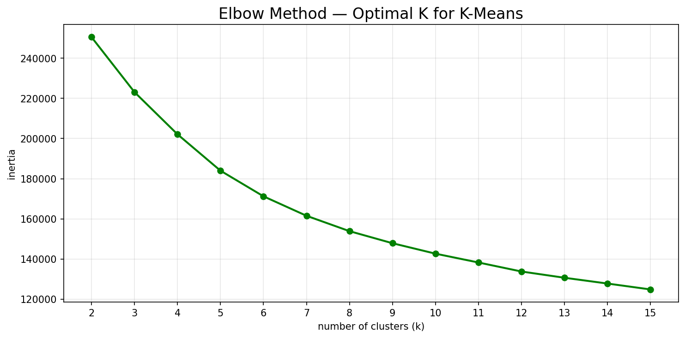
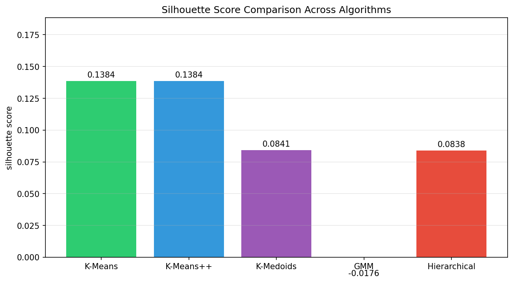
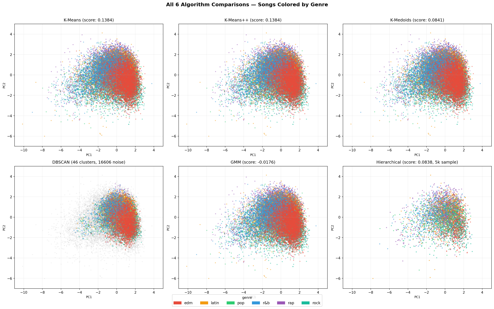
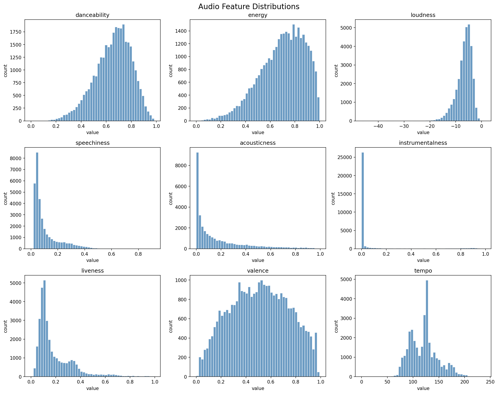
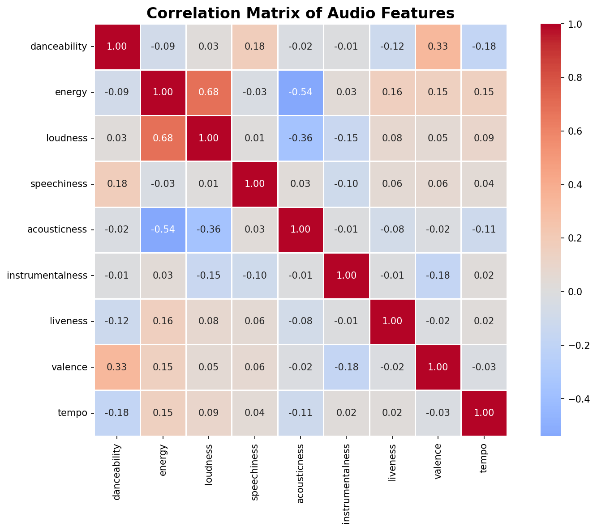
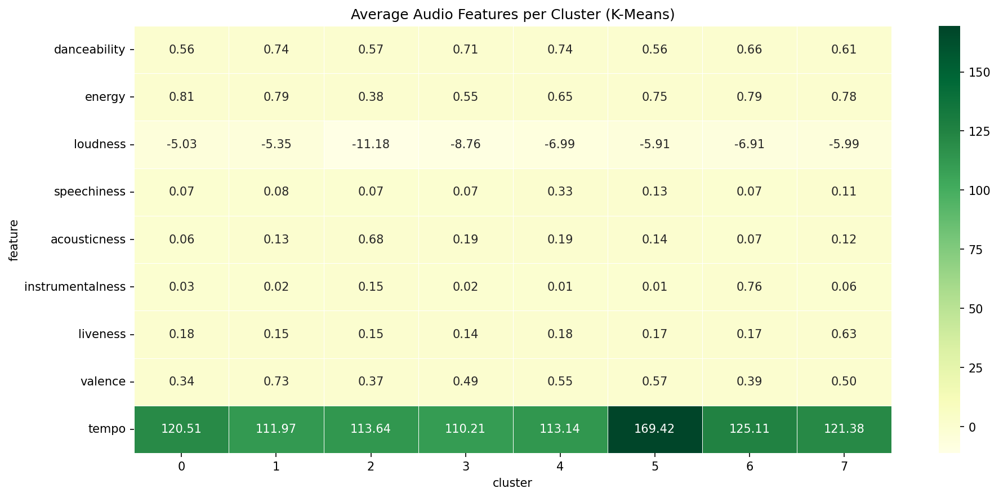

What We Did
We took a Spotify dataset with 32,000+ songs and tried to see if clustering algorithms could discover genre structure just from audio features like tempo, energy, danceability, and loudness — without ever being told what genres exist. We ran 6 different algorithms and compared them.
Algorithms
K-Means
Our baseline. Assigns each song to its nearest cluster center.
K-Means++
Same as K-Means but picks smarter starting points.
K-Medoids
Uses actual songs as centers instead of averages.
DBSCAN
Groups by density. Labels songs that don't fit as noise.
GMM
Gives each song a probability for each cluster instead of a hard pick.
Hierarchical
Builds a tree showing how songs and genres relate.
Results
| # | Algorithm | Silhouette Score | Notes |
|---|---|---|---|
| 1 | K-Means | 0.1384 | Best performer |
| 2 | K-Means++ | 0.1384 | Tied for best |
| 3 | Hierarchical | 0.0992 | Ran on 5k sample |
| 4 | K-Medoids | 0.0841 | |
| 5 | GMM | -0.0176 | Soft assignments didn't fit |
| 6 | DBSCAN | N/A | 46 clusters, 16,606 noise points |
Graphs

Curve flattens at K=8 — that's where we stopped adding clusters.

K-Means and K-Means++ tied at 0.1384.

Each dot is a song colored by its real genre. DBSCAN is mostly grey noise points compared to the others.

Speechiness and instrumentalness are both skewed heavily toward zero.

Energy and loudness correlate at 0.68 — strongest relationship in the data.

Cluster 5 stands out — tempo of 169 BPM vs 110-125 for everything else.
Key Findings
K-Means Won
Tied with K-Means++ at 0.1384. Simple distance-based clustering worked best.
DBSCAN Failed
Labeled over half the songs as noise. Music genres blend too much for density-based methods.
Features Overlap
Energy and loudness at 0.68 correlation — explains why EDM and rock cluster together.
Cluster 5 Stood Out
169 BPM average tempo — noticeably faster than every other cluster.
How to Run
The dataset downloads automatically from a URL — no manual setup needed.
pip install -r requirements.txt python3 music_genre_clustering.py
Close each plot window as it pops up so the script keeps running.